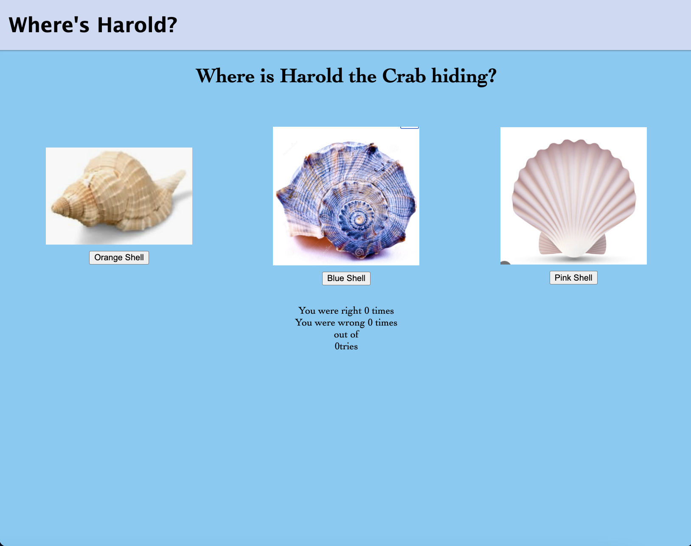
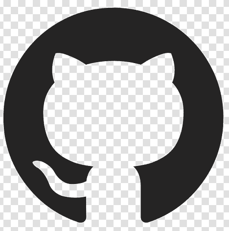
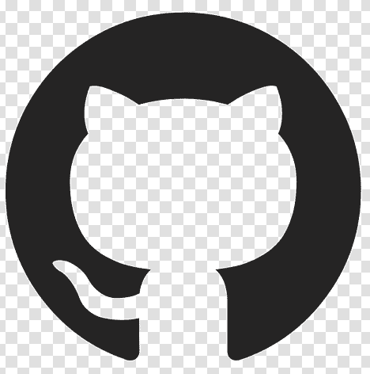

About Me
Hello and welcome to my portfolio! I am a full-stack software developer with a background in fashion
merchandising, makeup artistry, and hair styling
originally from Dallas, Texas.
After graduating from The University of North Texas with my
bachelors in Fashion Merchandising in 2016, I relocated to
Portland, Oregon to pursue a formal career in the beauty
industry. I quickly fell in love with hair color theory and upon
graduation began my path to becoming a color specialist with a
focus in color correction and creative color.
However, after spending over 10 years in the beauty industry I
knew I wanted to start on a journey to find something I am just
as passionate about but would provide a more stable work-life
balance. Enter software development!After the unfortunate
closure of my first coding bootcamp in early 2023 I was
determined to keep on my path to becoming an employed developer.
While I was only 30 days in at the time of the closure, I knew I
loved software development and would do everything in my power
to find a new program to guide me along my path. As of May 2023,
I began a new program at Epicodus in Portland, Oregon and am
back on track.
My background as a hair color specialist and makeip artist has
taught me how to solve problems using creative solutions. I love
to learn the rules then having the creative freedom come up with
my own ways of implementing them while keeping my code clean and
concise, just as you need to do as a successful colorist. I also
might or might not have built MySpace layouts that I would sell
to my classmates in high school, so I’m basically living my 16
year old self’s dream - but that’s neither here nor there.
Even though I left the industries behind I still love all things
fashion and beauty. In my spare time - when I'm not spending
time with my fur babies - I enjoy working on color projects and
flexing my creative muscles as much as I can. I've also become a
lover of all things nature and you can find me hiking my way
through the Pacific Northwest on the weekends and any time off I
get.
Current Projects

Ghost Hunter Game
An interactive single-player game that allows the player, a rainbow-haired unicorn with 10 lives, to input a name to create a ghost character. The ghosts are given a randomly selected number of lives and the player must "battle" ghosts.
Languages Used
- HTML
- Javascript
- CSS

Animal Sanctuary Website
A static html webpage that showcases the images and descriptions of animals up for adoption at an animal sanctuary.
Languages Used
- HTML
- CSS

Guessing Game
A simple game where the player will press a button to guess which shell Harold the crab is hiding under. The crab icon will randomly move between the different shell images as the player guesses.
Languages Used
- HTML
- CSS
 
